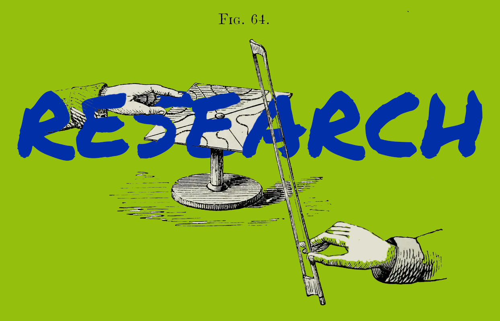

Public Domain Image: Illustration of Chladni’s technique for producing his figures (1869)
Identifying essential nonprofits with a novel NLP Method
Computational Antitrust Research Interview
Art/Research Presentation Slides
Convergence in Viral Outbreak Research